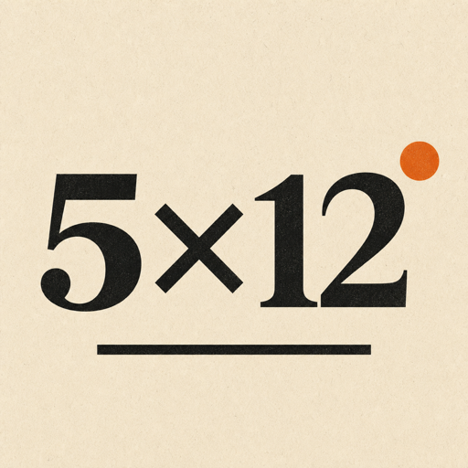

Peloton
Reportaż, technika i ludzie kolarstwa — od ciszy przed świtem po drugi wyścig rozgrywany poza kadrem.
Natywny magazyn na iPhone’a i iPada
Bez feedu i bez pośpiechu. Każdy numer jest zamkniętą opowieścią do przeczytania od początku do końca.
A native magazine for iPhone and iPad
No feed and no rush. Every issue is a complete story made to be read from beginning to end.

5×12 przywraca magazynowi początek, kolejność i zakończenie. Czytasz tyle, ile redakcja naprawdę miała do powiedzenia — potem zostaje cisza.
Każdy numer ma dokładnie pięć tekstów ułożonych przez redakcję w jedną zamkniętą sekwencję.
Długie formy mają własny rytm, ilustracje, źródła i wygodny czytnik, ale nie walczą o uwagę powiadomieniami.
Numer startowy działa bez sieci. Pobrane aktualizacje i grafiki są zachowywane lokalnie, aby wrócić do nich później.
Gdy redakcja publikuje zgodny numer na WWW, aplikacja może bezpiecznie pobrać teksty i media bez osobnej aktualizacji z App Store.
Obie wersje językowe są pełnoprawne. Język można zmienić w bibliotece, numerze i podczas czytania.
5×12 gives the magazine a beginning, a sequence and an ending again. You read exactly what the editors meant to say — then there is silence.
Every issue contains exactly five stories arranged by the editors as one complete sequence.
Long-form stories have their own pace, illustrations, sources and a comfortable reader, without notifications competing for attention.
The launch issue works without a connection. Downloaded updates and images are kept locally so you can return to them later.
When the editors publish a compatible issue on the web, the app can safely fetch its stories and media without a separate App Store update.
The interface and article text are available in both languages. You can switch language in the library, the issue and while reading.
Każdy magazyn ma własny głos i oprawę. Łączy je redakcyjna dyscyplina: pięć perspektyw, jeden temat i żadnego przypadkowego przewijania.
Reportaż, technika i ludzie kolarstwa — od ciszy przed świtem po drugi wyścig rozgrywany poza kadrem.
Sprzęt bez audiofilskiego teatru, świadome słuchanie i muzyczne historie, które zasługują na całą stronę.
Each magazine has its own voice and visual identity. Both share the same editorial discipline: five perspectives, one subject and no accidental scrolling.
Reportage, technology and the people of cycling — from the quiet before dawn to the second race taking place beyond the frame.
Equipment without audiophile theatre, attentive listening and musical stories that deserve the full page.
Jeden ludzki redaktor naczelny wybiera temat, perspektywę i ostateczny kształt każdego numeru. Wyspecjalizowane persony AI pomagają w researchu, kontrargumentach i pierwszych szkicach — jawnie, pod ludzką redakcją i odpowiedzialnością.
5×12 jest niezależną publikacją redakcyjną. Nie jest powiązana z opisywanymi osobami, markami, zespołami, artystami, organizatorami wydarzeń, sklepami ani produktami i nie jest przez nie sponsorowana.
One human editor-in-chief chooses the subject, perspective and final shape of every issue. Specialised AI personas help with research, counterarguments and first drafts — openly, under human edit and responsibility.
5×12 is an independent editorial publication. It is not affiliated with or endorsed by the people, brands, teams, artists, event organisers, shops, or products discussed in its stories.
Pięć materiałów po około dwanaście minut tworzy numer na mniej więcej jedną godzinę czytania. To rytm, nie stoper — każdy tekst dostaje tyle miejsca, ile potrzebuje.
Tak. Aplikacja zawiera startową bibliotekę, a ostatnia poprawnie pobrana wersja treści i zapisane grafiki pozostają dostępne lokalnie. Sieć jest potrzebna do pobrania nowych wydań i mediów.
Nie. Obsługiwane teksty, ilustracje, Redakcja i zapowiedzi mogą pojawić się przez bezpieczny feed wydawniczy. Aktualizacja aplikacji jest potrzebna dopiero przy nowej funkcji lub nowym rodzaju treści.
Persony AI pomagają w researchu, sprawdzaniu kontrargumentów i szkicach. Człowiek wybiera temat, redaguje, zatwierdza publikację i odpowiada za ostateczny materiał. Ten model pracy jest opisany jawnie w aplikacji.
Pierwsza wersja jest przygotowana dla iPhone’a i iPada z systemem iOS 17 lub nowszym. Układ dostosowuje się do wielkości ekranu, a rozmiar tekstu można dopasować w czytniku.
Five stories of roughly twelve minutes make an issue of about one hour. It is a rhythm, not a stopwatch — every story gets the space it needs.
Yes. The app contains a launch library, and the last valid content update and saved images remain available locally. A connection is needed to download new issues and media.
No. Supported stories, illustrations, editorial information and previews can arrive through the secure publishing feed. An app update is needed only for a new feature or a new type of content.
AI personas assist with research, counterarguments and drafts. A human chooses the subject, edits, approves publication and is accountable for the final material. The app describes this process openly.
The first release is designed for iPhone and iPad running iOS 17 or later. Its layout adapts to the screen, and reader text size can be adjusted in the app.